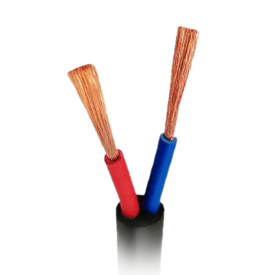
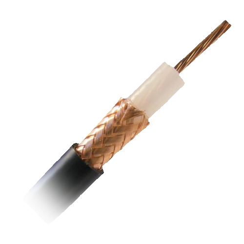
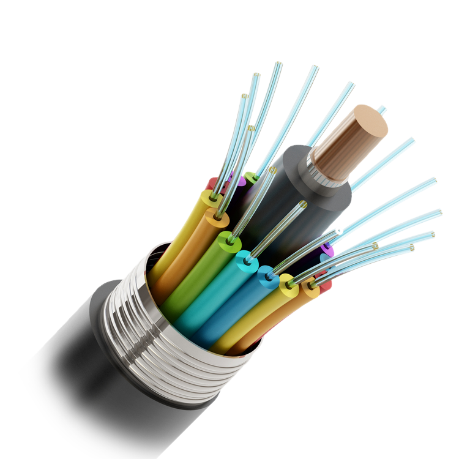

Back to Home
Social Networks
Network Topology
Data Processing & Transmission
Networking Hardware
Transmission Mediums
Transmission mediums (or media for singular) refers to the method of information transfer between networks.
Wired transmission refers to the usage of physical cables in telecommunication (internet transmission) systems.
Some examples of wired transmission are copper and fibre optic cables.

A copper wire is a form of wire made of copper - these were historically used in telephone networks for dial-up internet access but were heavily phased out for the faster fibre-optic cables.

A coaxial cable is a type of cable that allows carrying of high-frequency signals with minimal electrical losses. Common applications include TV, radio, and Ethernet cables.

Fibre Optic cables are a new type of wire where they use glass fibre to bounce light through and pass information. They are extra reliable at storing accurate information without degradationWireless transmission refers to the usage of radiowaves or other wireless data techniques in telecommunication systems. Unlike wired transmission, wireless transmission typically is much slower due to interference. The WiFi protocol fixes this by using multiple frequencies through the practise of “frequency hopping”, which switches transfer to other frequencies, a technology primarily credited to Hedy Lamarr - NOT to be confused with the creator of WiFi.
Some examples of wireless transmission are WiFi and Bluetooth protocols.
Debatably the most common form of transmission media in day to day use, WiFi is short-distance wireless transmission technology developed in Australia by the CSIRO (Commonwealth Scientific and Industrial Research Organisation). The technology was pioneered by John O’Sullivan, using a transfer strategy known as “frequency hopping” invented by Hedy Lamarr.
Bluetooth is yet another form of a short-distance communication protocol. Named after a 10th century viking, Bluetooth is commonly used with computer peripherals, such as mice, keyboards, speakers, and game controllers.
A satellite is an object that orbits around the Earth. Use of man-made satelites in networks typically involves sending and receiving signals to and from Earth. The first satellite was Sputnik I, funnily enough “sputnik” (спутник) being Russian for “satellite”. Some recent usage of satellite technology includes satellite television and “Starlink”, a notoriously slow internet over satellite service.